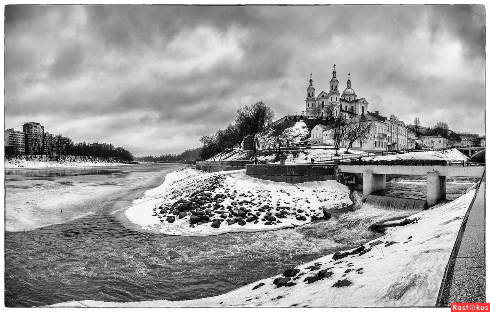

История древнего Витебска
Как и большинство древних городов Восточной Европы, Витебск возник у слияния двух рек - Западной Двины, несущей свои воды в Балтийское море и Витьбы, от которой и пошло название города

Археологические исследования свидетельствуют, что в устье Витьбы существовали поселения, основанные балтскими племенами, которых к IX веку сменили славянские племена кривичей.
Согласно легенде,город был заложен киевской княгиней Ольгой в 974 году . Расположенный на перекрестке важнейших торговых путей древности (из варяг в греки) и Великого Волжского , к концу XII веку Витебск превращается в центр ремесла и торговли, становится центром удельного княжества, подчиняющегося Полоцким, а временами, Смоленским князьям.
На Замковой горе находилась резиденция князя, а ниже жил люд попроще - торговцы и ремесленники. Уже в XII веке в городе был построен первый каменный храм православная Свято-Благовещенская церковь, где хранились эталоны мер веса и длинны, используемые при торговых операциях; переписывались книги, летописи; обучались дети.
Последним восточно-славянским удельным князем был Ярослав Васильевич,который в 1318 году выдал свою дочь за князя Ольгерда, сына великого князя литовского Гедемина. Находясь в составе Великого Княжества Литовского, город пользовался льготами и автономией, вокруг него были возведены мощные фортификационные укрепления.
Поддробнее вы можете прочитать здесь - Wikipedia.org